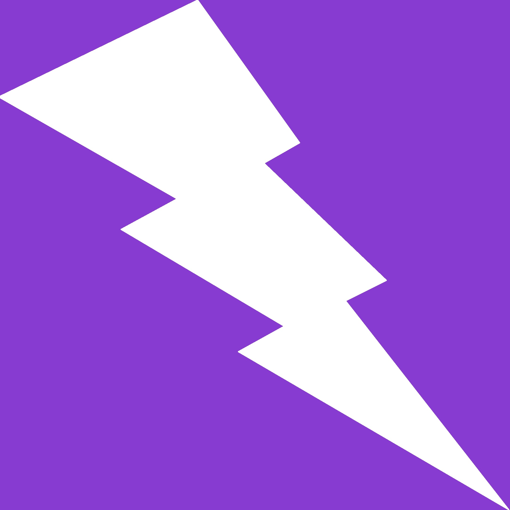
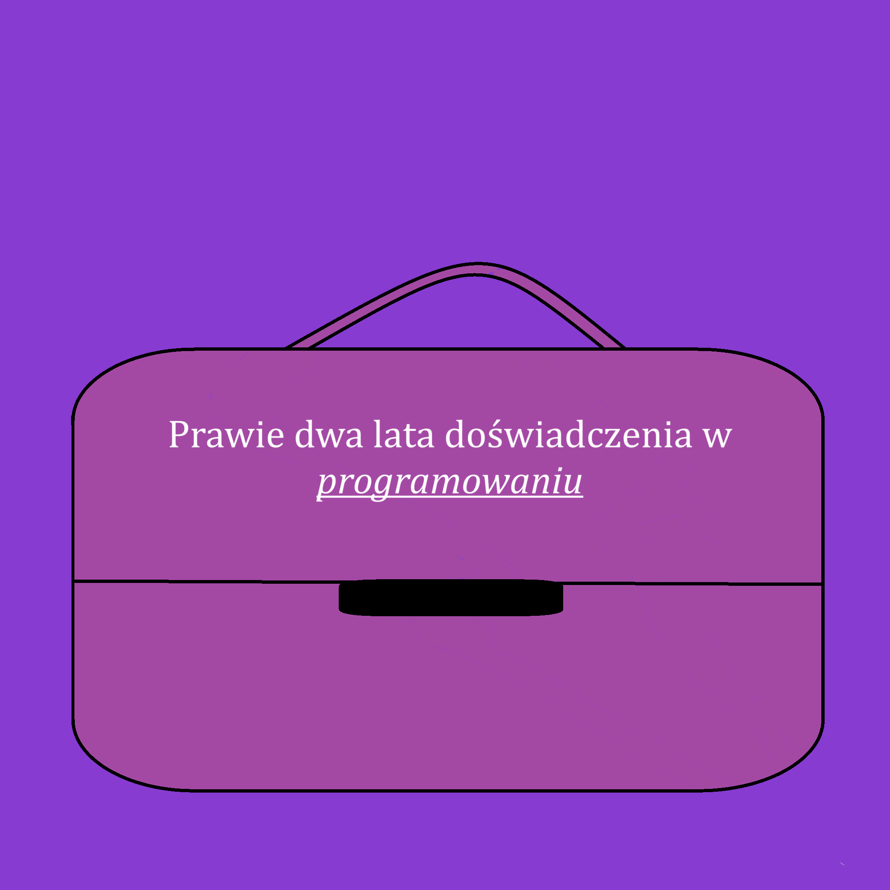

Good morning, thank you very much for your time and interest. I am a second-year student studying Computer Science and Econometrics at the Andrzej Frycz Modrzewski Krakow Academy. Programming is an integral part of my daily life and has been for nearly two years.

◉ Proficiency in Java, C++, C#, PHP, MySQL, and Javascript
Umiejętności:
◉ Proficiency in Java, C++, C#, PHP, MySQL, and Javascript
◉ Familiarity with the Spring framework
◉ Knowledge and ability to use Maven, Jetty, H2, Flyway, and Hibernate
◉ Understanding of HTML and CSS
◉ Proficiency with development environments: IntelliJ, Apache Netbeans, Microsoft Visual Studio
◉ Good teamwork and time management skills
◉ English language proficiency at the B2/C1 level
I pursue programming out of passion, and on this website, I showcase my actual skills.
Therefore, I encourage you to visit the subpage:
where I provide both the code and descriptions of my projects.

Doświadczenie:
Since June 2022, I have been gradually immersing myself in programming ◉